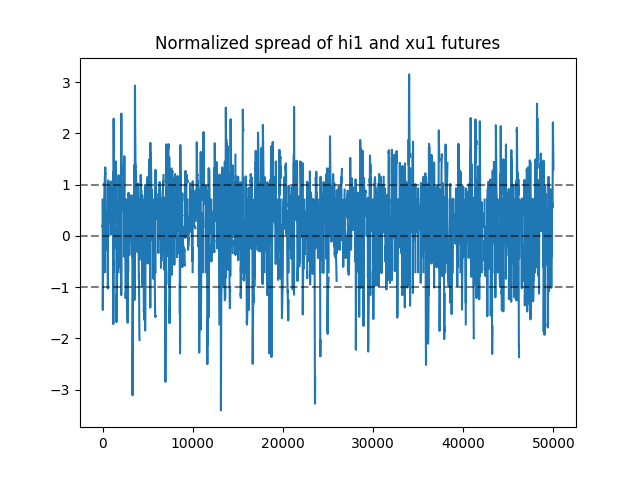

Introduction
This article will discuss cointegration and pair trading on index futures using python. For cointegration test, we will use statsmodels.tsa.stattools.coint, and statsmodels.regression.linear_model.OLS for least squares regression. This lecture is well explained the produce of cointegration and pair trading, please read this lecture for comprehensive details.
We can perform Engle-Granger cointegration test using python in few steps, but before that let us take a look at what we will perform in the test.
First, we will form the cointegrating residual using least squares regression. Second, we will use statsmodels.tsa.stattools.adfuller to test whether the residual contains a unit root. If the residual doesn't have a unit root, it means that the null hypothesis is not rejected, the residual series is stationary and it will mean-reverting. As a result, we can trade the spread by pair trade.
Data
The first pair we choose is HSI futures (hi1) vs XINA50 futures (xu1), the reason for choosing this pair is that the Hong Kong stock market and China stock market are highly correlated, as an increasing number of China's companies raise capital in HKEX. Therefore HSI and XINA50 will share some systematic risk and expect that they are co-integrated.
The dataset contains hi1 and xu1 close minute by minute closing log price from 2015 to 2021. We will compute the residual and its Augmented Dickey-Fuller test statistic as long as p-value.
By constructing a portfolio which long hi1 and short xu1 (short hi1 and long xu1), we can diversify the systematic risk and lower the risk since it is market-neutral.
A plot of hi1 and xu1 log price from 20150205 to 20210818.The second pair of futures is K200 futures (km1) vs N255 futures (no1). The reason is simple, they are Asian markets, which shares similar systematic risk.
A plot of km1 and no1 log price from 20170816 to 20210818.Cointegration test
We will directly use statsmodels.tsa.stattools.coint to obtain t-statistic of Augmented Dickey-Fuller test on the residual series and its p-value.
By using above test, unfortunately, hi1 and xu1 are not co-integrated, the test return (-2.2068, 0.4208, array([-3.8964 , -3.3361, -3.0444])). It means that we cannot reject the hypothesis that there is no cointegrating relationship, which is a bit out of our expectation. Although they are not co-integrated, we can try to construct the spread and get the backtest result from the pair.
On the other hand, km1 and no1 are co-integrated, the test return (-3.6433, 0.0216, array([-3.8964, -3.3361, -3.0444])), the small p-value (0.0216) which below our critical value 0.05 indicate that there is a cointegrating relationship, the residual series is stationary.
Trading strategy
We will fit a least squares regression to obtain the hedge ratio, and then use it for calculating the spread. Z-score can normalize the spread so that we can generate our trading signal. After all calculations, we obtain a spread series that looks mean-reverting, and we can define our trading strategy. For example:
- Long the spread if z-score below -1
- Short the spread if z-score above 1
- Close the positions if z-score go back to zero or on market close
The above trading strategy is simple, we can fit different parameters into it, for example, trigger level of trading signal, the exit level, etc. And finally, we can get the following plot of equity curve on both pairs.
The results are not after costs, costs would play an important role in pair trading, therefore these results may not be practical.
Conclusion
We have done a simple co-integration test and back-tested a pair trading strategy, one biggest problem on pair trading would be the time-varying hedge ratio. The spread could become not co-integrated due to the time-varying hedge ratio, but we can have a better estimation on the parameters using different approaches, such as Kalman filters, rolling least squares regression to handle this problem. There is a lot more to do before we implementing a pair trading strategy.
Improvement can be made if we further investigate other time-varying methods for calculating the spread, we can further discuss more other methods in the future article.